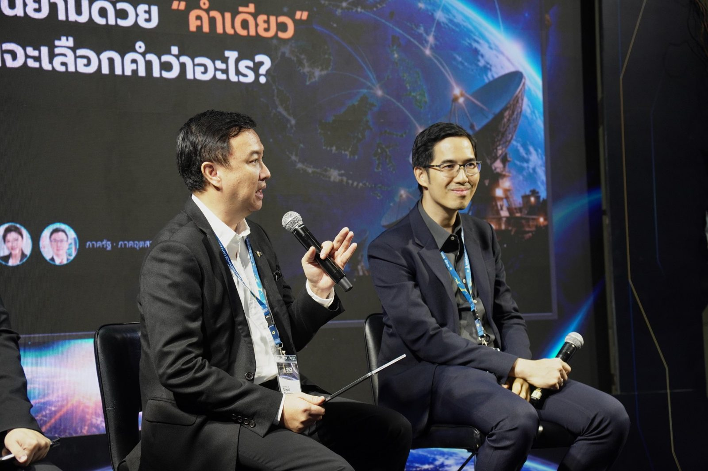
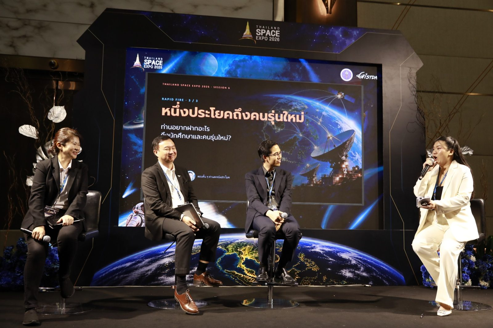
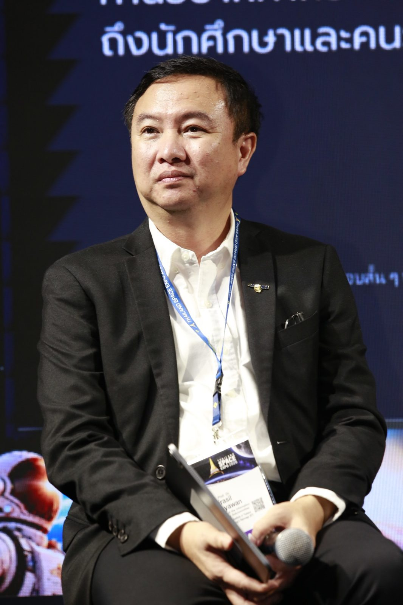

CISS ร่วมเวทีเสวนา Thailand Space Expo 2026 ชี้อวกาศไทยต้องโตแบบ “สามประสาน”
เสวนาหัวข้อ “Where Government, Industry, and the Next Generation Meet”
อวกาศบางมด · ศูนย์ CISS มจธ. · Thailand Space Expo 2026

ผศ.ดร.จิรศิลป์ จยาวรรณ บนเวทีเสวนาในงาน Thailand Space Expo 2026
ผศ.ดร.จิรศิลป์ จยาวรรณ ภาควิชาวิศวกรรมอิเล็กทรอนิกส์และโทรคมนาคม มหาวิทยาลัยเทคโนโลยีพระจอมเกล้าธนบุรี (มจธ.) หัวหน้า KMUTT Space Frontier และประธาน Space Innovation Hub ของ GISTDA ร่วมเสวนาในงาน Thailand Space Expo 2026 ในฐานะผู้แทนภาควิชาการ ร่วมกับ ดร.ณัฐวัฒน์ หงส์กาญจนกุล ผู้อำนวยการสำนักส่งเสริมเศรษฐกิจอวกาศ GISTDA และคุณปรีญาภรณ์ ตั้งเผ่าศักดิ์ ประธานเจ้าหน้าที่บริหาร บริษัท เอแอลที เทเลคอม จำกัด (มหาชน)
รัฐ เอกชน มหาวิทยาลัย ต่อกันเป็นวงจรเดียว
แกนของเวทีคือความร่วมมือสามฝ่าย ภาครัฐวางทิศทางและเป็นลูกค้ารายแรก ภาคเอกชนพาเทคโนโลยีสู่ตลาด และมหาวิทยาลัยสร้างเทคโนโลยีและคน เมื่อถูกขอให้นิยามเศรษฐกิจอวกาศไทยด้วยคำเดียว ผศ.ดร.จิรศิลป์ เลือกคำว่า “คน” เพราะเทคโนโลยีซื้อได้ แต่คนที่ออกแบบ บูรณาการ และต่อยอดเป็นธุรกิจได้ ประเทศต้องสร้างเอง และยังมีไม่พอ
HAPS ตัวอย่างที่จับต้องได้
ผศ.ดร.จิรศิลป์ อธิบาย HAPS ว่าเป็น “เสาสัญญาณบนฟ้า” ที่ลอยอยู่ในชั้นบรรยากาศสูงราว 20 กิโลเมตร ครอบคลุมพื้นที่กว้างแบบดาวเทียม แต่สัญญาณแรงและหน่วงต่ำแบบเสาภาคพื้น โครงการที่ได้รับทุนจาก บพข. มุ่งพัฒนาต้นแบบ UAV-HAPS พร้อมเพย์โหลดสื่อสารที่ทำงานได้จริงในประเทศไทย ประกอบด้วยแพลตฟอร์มอากาศยาน เพย์โหลดสื่อสาร และการทดสอบภาคสนามในสถานการณ์ภัยพิบัติและพื้นที่ห่างไกล เงื่อนไขของทุนคือต้องมีเอกชนร่วมลงทุน เพื่อให้เทคโนโลยีไปถึงตลาด ซึ่งเป็นบทบาทของกลุ่มเอแอลที เทเลคอม


เวทีเสวนาในงาน Thailand Space Expo 2026 และ ผศ.ดร.จิรศิลป์ จยาวรรณ ระหว่างการเสวนา
ประตูสำหรับคนรุ่นใหม่
คณะวิศวกรรมศาสตร์ มจธ. เพิ่ม Space Engineering Track ในหลักสูตรปริญญาโทวิศวกรรมไฟฟ้าและสารสนเทศ (MEIE) สภามหาวิทยาลัยอนุมัติเมื่อ 6 พฤษภาคม 2569 และเปิดรับรุ่นแรกเมื่อเดือนสิงหาคม 2569 หลักสูตรออกแบบร่วมกับอุตสาหกรรมและหน่วยงานกำกับ มีวิชากลุ่มวิศวกรรมอวกาศ 8 วิชา ตั้งแต่ระบบยานอวกาศ กลศาสตร์วงโคจร การสื่อสารดาวเทียม ไปจนถึงกฎหมายอวกาศและการประกอบการอวกาศ และเปิดให้คนทำงานเรียนวันเสาร์–อาทิตย์ได้ มจธ. ยังอยู่ระหว่างพัฒนาความร่วมมือกับ University College Dublin ประเทศไอร์แลนด์ ทั้งแนวทางสองปริญญา และแนวทางร่วมสอนและร่วมดูแลวิทยานิพนธ์
ฝากถึงคนรุ่นใหม่
ในช่วงท้าย ผศ.ดร.จิรศิลป์ กล่าวถึงสิ่งที่อยากเห็นในอีก 5 ปี คือ HAPS ที่คนไทยออกแบบได้ขึ้นปฏิบัติงานเหนือพื้นที่ภัยพิบัติเป็นครั้งแรก สิ่งที่มหาวิทยาลัยต้องการจากอีกสองฝ่ายคือโจทย์จริงจากเอกชน และการเป็นลูกค้ารายแรกจากภาครัฐ พร้อมฝากถึงนักศึกษาและคนรุ่นใหม่ว่า “อวกาศไม่ไกลอย่างที่คิด แค่ 20 กิโลเมตรจากหัวเรา ประตูเปิดแล้ว เดินเข้ามาเลยครับ”